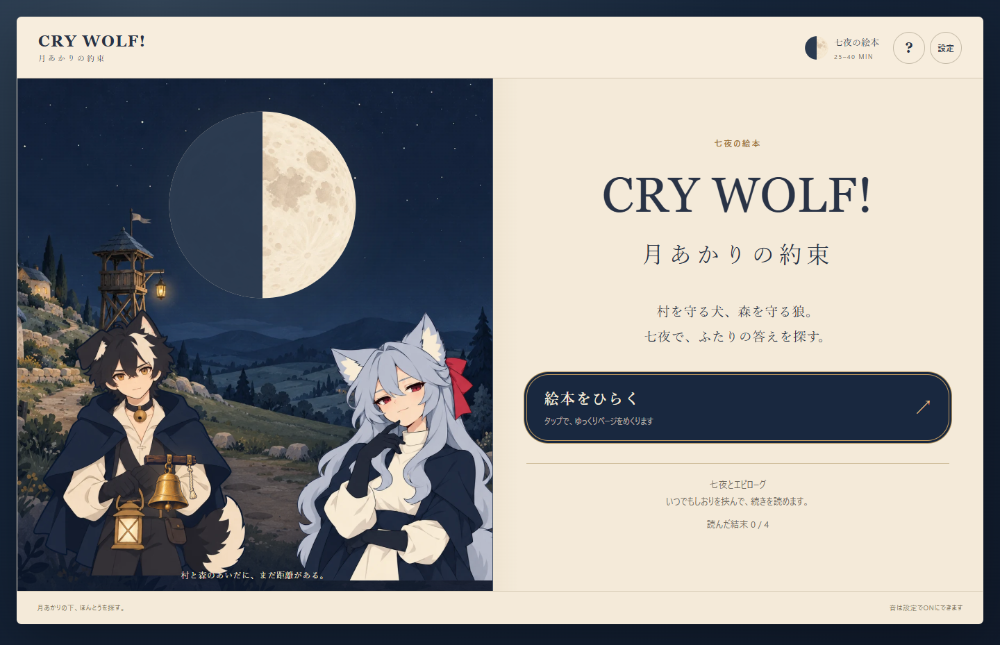
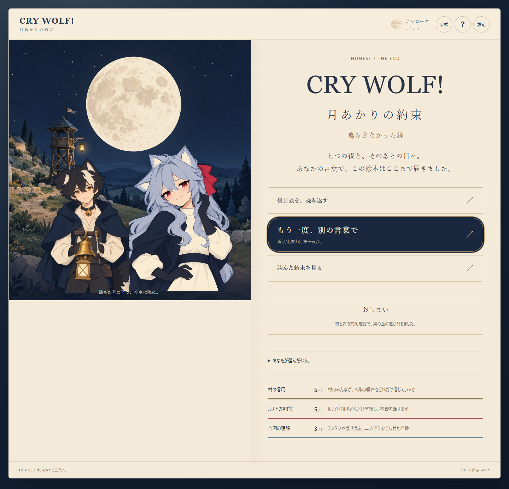

<!doctype html><html lang="ja"><meta charset="utf-8"><link rel="icon" href="data:,"><title>はじまりと、約束の表紙</title><style>body{margin:0;padding:16px;background:#19283f;color:#f4ead9;font:15px/1.7 system-ui,sans-serif}main{display:flex;gap:16px}figure{margin:0;width:720px}img{width:720px;height:470px;object-fit:cover;object-position:top;display:block}figcaption{padding:8px 0}</style><main><figure><figcaption>はじまり：半月 / からかう表情 / 距離を置く</figcaption></figure><figure><figcaption>TRUE END 読了：満月 / やわらいだ表情 / 隣へ</figcaption></figure></main></html>
